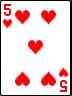
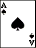

<!DOCTYPE html>
<html lang="en">
<head>
    <meta charset="UTF-8">
    <title>bootstrap notes</title>
    <!-- Bootstrap -->
    <link href="bootstrap.css" rel="stylesheet">
    <link href="myStyling.css" rel="stylesheet">
</head>

<body background="img/tableTop.bmp">
    <!---->
    <!---->
    <div id="navBarMenu" class="container-fluid" >
        <div class="navbar"></div>
    </div>

        <div class="p4" id="player_4">
            
            
        </div>

        <div class="p5" id="player_5">
            
            
        </div>

    <script src="tether.js"></script>
    <script src='jquery-3.1.1.js'></script>
    <script src='bootstrap.js'></script>
</body>
</html>


<!--
link to the main bootstrap css file to bring it in
 <link href="bootstrap.css" rel="stylesheet">

 can make js source available by including the src at the bottom of the page
 <script src="jquery/jquery-2.0.3.min.js"></script>
 <script src="bootstrap/bootstrap-2.3.1.min.js"></script>

Components:
Collapse
 - can toggle content on pages with a bit of class changes and javascript.
 - also uses the transition plugin as well for smooth transitions
* .collapse hides content
* .collapsing is applied during transitions
* .collapse.in shows content

example:
* SEE Dev/web/bootStrap_themes/components_examples.html for a working example of this

 - can expand collapse to create an according effect
* to achieve this effect essentially just add to the collapsible element the
data-parent="#selector"

example:
* SEE Dev/web/bootStrap_themes/components_examples.html for a working example of this


-->